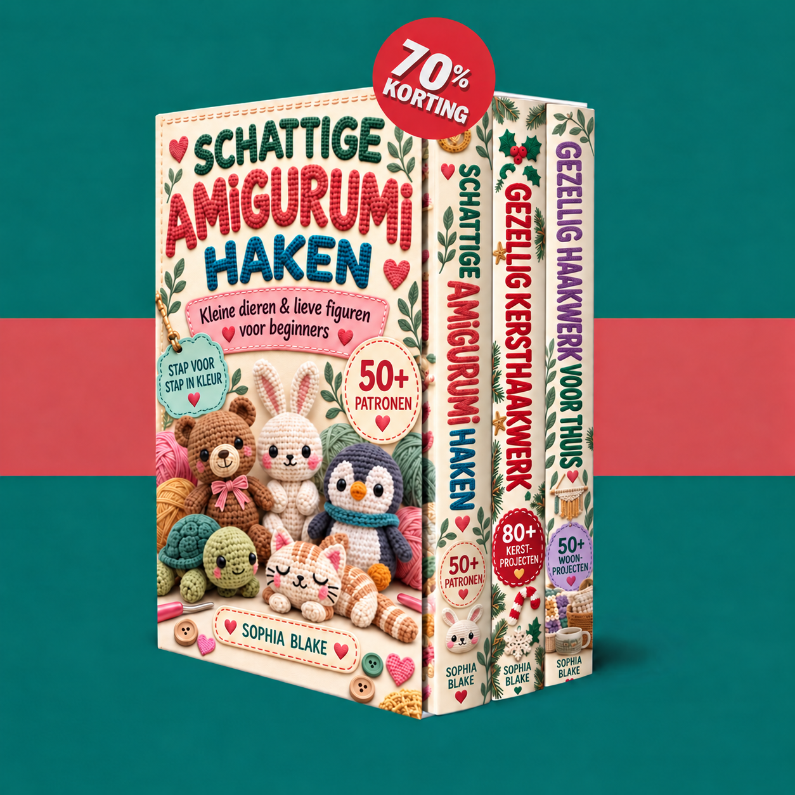

Je toegang is bevestigd. Ontdek je drie haakboeken en begin met kleine dieren, kerstversieringen of gezellige projecten voor je huis.

Je haakboeken worden geladen…
Schakel JavaScript in om de ledenomgeving te gebruiken. Je kunt je PDF’s ook rechtstreeks openen via de onderstaande links.